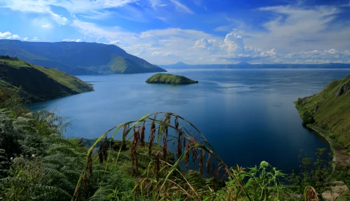

Berita
Pariwisata Halal di Indonesia
Indonesia kembali menorehkan prestasi di level internasional dengan diraihnya peringkat pertama sebagai destinasi wisata halal dunia versi GMTI (Global Muslim Travel Index) 2019, yang diumumkan oleh CrescentRating - Mastercard.
Prestasi ini merupakan kabar gembira yang tidak hanya dirasakan oleh Kementerian Pariwisata saja selaku Kementerian yang menangani pengembangan wisata halal di Indonesia, namun juga bagi seluruh bangsa Indonesia. Setelah lima tahun fokus pada pengembangan pariwisata halal, Indonesia akhirnya mampu menunjukkan potensinya sebagai destinasi wisata halal terbaik dunia.
Prestasi baru ini telah disampaikan secara langsung oleh CEO CrescentRating dan juga halaltrip.com, Fazal Bahardeen, bertempat di Hotel Pullman Jakarta, Selasa (09/04) dan dihadiri langsung oleh Menteri Pariwisata (Menpar) Republik Indonesia, Arief Yahya, dan didampingi oleh Deputi Bidang Pengembangan Industri dan Kelembagaan, Ni Wayan Giri Adnyani, Deputi Bidang Pengembangan Pemasaran I, Rizki Handayani, Staf Ahli Bidang Ekonomi dan Kawasan Pariwisata sekaligus selaku Ketua Tim Percepatan Pengembangan Pariwisata Halal, Anang Sutono, dan Pengarah Tim Percepatan Pengembangan Pariwisata Halal, Riyanto Sofyan.
Selengkapnya
Wisata Halal di Indonesia GMTI 2019

Chief Executice Officer Crescen Rating, Fazal Bahardeeen, menuturkan pariwisata halal di Indonesia memiliki kesempatan baru di sektor pariwisata untuk menggaet wisataan muslim dari dunia dan memperluas perkembangan ekonominya. Populasi muslim yang besar membuat potensi wisata halal sangat prospektif untuk terus dikembangkan. Terlebih keunggulan objek wisata seperti pantai, keragaman budaya, hingga infrastruktur dasar.
"IMTI akan membantu para pemangku kepentingan di sektor pariwisata untuk memainkan peran penting dalam mempercepat pertumbuhan pariwisata halal di Indonesia," tutur Fazal. IMTI yang diterapkan di Indonesia mengadopsi empat kriteria yang ditetapkan dalam GMTI. Keempat kriteria itu yakni aksesibilitas, komunikasi, lingkungan, dan jasa layanan. IMTI dimulai pada 2018, dan IMTI 2019 ini merupakan tahun kedua dalam menerapkan standar global GMTI untuk menilai kinerja destinasi pariwisata halal unggulan di Indonesia.
Selengkapnya
Indonesia
Pariwisata Halal di Indonesia
Indonesia kembali menorehkan prestasi di level internasional dengan diraihnya peringkat pertama sebagai destinasi wisata halal dunia versi GMTI (Global Muslim Travel Index) 2019, yang diumumkan oleh CrescentRating - Mastercard.
Prestasi ini merupakan kabar gembira yang tidak hanya dirasakan oleh Kementerian Pariwisata saja selaku Kementerian yang menangani pengembangan wisata halal di Indonesia, namun juga bagi seluruh bangsa Indonesia. Setelah lima tahun fokus pada pengembangan pariwisata halal, Indonesia akhirnya mampu menunjukkan potensinya sebagai destinasi wisata halal terbaik dunia.
Prestasi baru ini telah disampaikan secara langsung oleh CEO CrescentRating dan juga halaltrip.com, Fazal Bahardeen, bertempat di Hotel Pullman Jakarta, Selasa (09/04) dan dihadiri langsung oleh Menteri Pariwisata (Menpar) Republik Indonesia, Arief Yahya, dan didampingi oleh Deputi Bidang Pengembangan Industri dan Kelembagaan, Ni Wayan Giri Adnyani, Deputi Bidang Pengembangan Pemasaran I, Rizki Handayani, Staf Ahli Bidang Ekonomi dan Kawasan Pariwisata sekaligus selaku Ketua Tim Percepatan Pengembangan Pariwisata Halal, Anang Sutono, dan Pengarah Tim Percepatan Pengembangan Pariwisata Halal, Riyanto Sofyan.
Selengkapnya
Wisata Halal di Aceh
Masjid Raya Baiturrahman, ialah simbol agama, budaya, semangat, kekuatan, perjuangan, dan nasionalisme masyarakat Aceh. Masjid ini ialah landmark Banda Aceh yang selamat dari terjangan gelombang tsunami, 2004 silam. Lokasinya yang berada di pusat kota, memudahkan para pendatang untuk mengunjunginya. Pada hari-hari biasa, masjid ini tetap ramai dikunjungi. Baik untuk beribadah maupun sekadar berfoto dan mengagumi keindahan bangunannya.
Mengulas sedikit tentang destinasi unggulan lainnya, Pulau Weh merupakan pulau vulkanik kecil di barat laut Sumatera. Pulau ini terletak di Laut Andaman, tepatnya di wilayah Sabang. Di sinilah berdiri Tugu Nol Kilometer Indonesia yang banyak menarik wisatawan untuk berkunjung. Selain itu, pantai Pulau Weh juga sangat indah. Di sini tersedia penginapan sehingga wisatawan bisa memperpanjang masa liburannya.
Selengkapnya
Wisata Halal di Sumatra Barat
Di Sumbar, wisatawan bisa menikmati seni budaya, wisata kuliner dan destinasi yang beragam mulai dari laut, perbukitan, ngarai, danau serta pegunungan. Di Padang, pengunjung dapat menikmati keindahan pantai Padang atau pantai Air Manis, lengkap dengan legenda Malin Kundang. Pada rute Padang-Bukittinggi, mereka akan melihat Anai Resort, tempat pemandian dan olahraga golf, air terjun, dan sampai di Padangpanjang ada kuliner khas sate. Di Kota Bukittinggi, ada Ngarai Sianok, Jam Gadang, Lubang Jepang, di Limapuluh Kota ada Lembah Harau dan Ngalau, lalu ke Agam dapat melihat Danau Maninjau, dan Puncak Lawang.
Kemudian kalau ke Tanah Datar, mereka dapat melihat Rumah Gadang Istano Basa Pagaruyung dan berbagai kegiatan budaya tradisional yang menjadi daya tarik, seperti Pacu Jawi, Pacu Itik dan Pacu Kuda. Pengunjung juga dapat melihat keindahan Danau Singkarak, dan Danau di Atas serta di Bawah di Kabupaten Solok, kemudian pencinta selancar bisa menikmati ombak laut Mentawai.
Selengkapnya